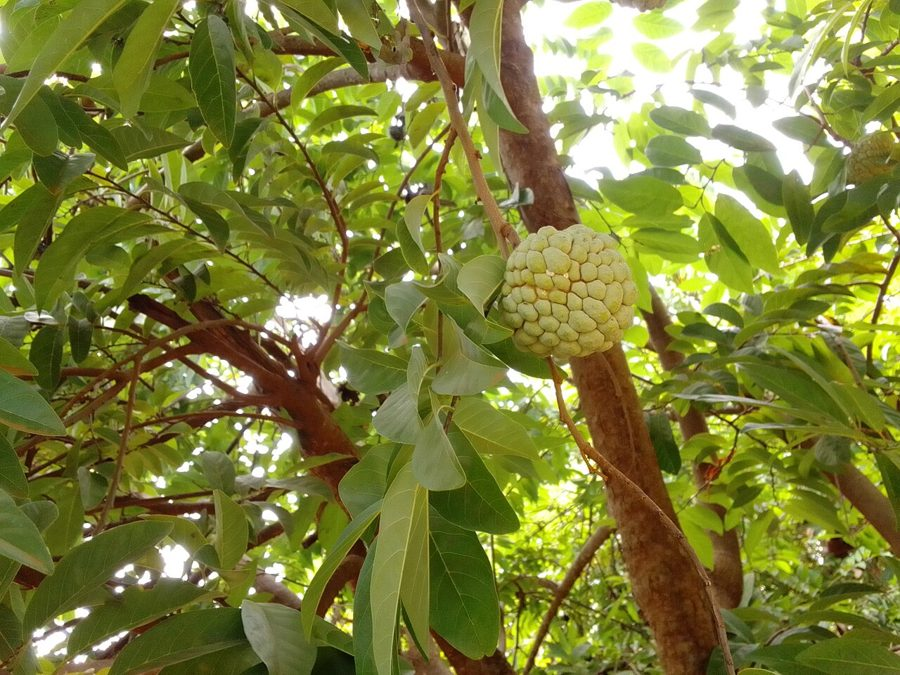

सीताफलCustard Apple
Annona squamosa · Annonaceae · FLR-0023

- Scientific name
- Annona squamosa L.
- Family
- Annonaceae
- Hindi
- सीताफल / शरीफा / सरीफा
- Status here
- naturalized
- IUCN
- not evaluated
When to look कब देखें
Present all year.
सीताफल / Custard Apple
Annona squamosa L. — Annonaceae
सीताफल — सीताफल का नाम राम-कथा से जुड़ा है — शबरी ने राम को यही मीठा फल खिलाया था, ऐसी मान्यता है। वास्तव में यह पेड़ अमेरिका का मूल निवासी है, 16वीं सदी में पुर्तगाली व्यापारी भारत लाए। पर पूर्वी UP के गाँवों में यह इतना घुल-मिल गया है कि लोग इसे देशी मानते हैं। इसकी परागण-कथा असाधारण है — फूल भृंग (beetle) को अंदर बंद करके परागण करवाते हैं।
Quick Identification त्वरित पहचान
| Feature | Description |
|---|---|
| Tree form | Small tree or large shrub, 3–8 m, irregular crown |
| Leaves | Alternate, oblong-lanceolate, 7–12 cm, aromatic when crushed |
| Flowers | Greenish-yellow, 3 thick outer petals forming drooping tube; beetle-pollinated |
| Fruit | Heart-shaped aggregate, pale green-cream, knobby surface; sweet white pulp |
| Seeds | Shiny black, 1 per segment, flat-ovoid — toxic |
| Season clue | Ripe fruits Sep–Nov; often visible hanging from bare or semi-leafy branches |
Field tip: Crush a leaf — distinctive aromatic smell. The fruit's knobby "scale" pattern (really separate segments) is unlike any other common UP fruit. White creamy pulp around each black seed.
Morphology आकारिकी
| Feature | Measurement |
|---|---|
| Plant height | 3–8 m |
| Leaf length | 7–12 cm |
| Leaf width | 2–4 cm |
| Flower diameter | 2–3 cm (outer petals length) |
| Fruit / seed dimensions | 5–10 cm (fruit diameter) |
Trunk: Slender, often leaning, with irregular branching. Bark grey-brown, smooth with shallow longitudinal markings.
Leaves: Alternate, oblong-lanceolate, 7–12 cm × 2–4 cm, apex acute, base rounded. Underside slightly hairy. Strongly and distinctively aromatic when crushed — the aroma is a reliable field identification character. Thin-textured.
Flowers: 3 outer petals, thick, pale greenish-yellow to cream, 2–3 cm, fused into a drooping tube at opening. 3 inner petals vestigial. Stamens and pistils spiral on a conical receptacle inside. The flower opens only slightly — just enough to admit small beetles, which become temporarily trapped inside as the flower closes around them.
Fruit: A syncarpium (aggregate of many carpels fused together). Heart-shaped, 5–10 cm, pale green turning cream-yellow when ripe. Surface appears scaly (each "scale" = one carpel segment). White, creamy, sweet pulp — custard-like texture. Each segment contains one shiny black seed, 1–1.5 cm. Aroma increases sharply with ripeness.
परागण का चमत्कार: फूल भृंग (beetle) को अंदर खींचता है, फिर बंद हो जाता है। परागकण भृंग के शरीर पर चिपक जाते हैं। अगले दिन फूल खुलता है — भृंग बाहर निकलता है और अगले फूल में परागण करता है।
बीज: काले, चमकीले — सुंदर दिखते हैं, पर जहरीले हैं।
Ecological Role पारिस्थितिक भूमिका
Coleopterophily (beetle pollination): Annona flowers are a classic case of beetle pollination — one of the most ancient pollination syndromes, predating bee pollination evolutionarily. The flower has a protogynous timing: the female stage (stigma receptive, flower closed around the beetle) occurs first; then stamens shed pollen (male stage) as the flower opens and the beetle escapes. This ensures cross-pollination.
The trap mechanism: Small beetles (Carpophilus sp., Brachypeplus sp., and others) are attracted by fermentation-like scent of the inner floral cavity. They enter, become temporarily trapped as the inner petals close, pick up pollen on their bodies, and carry it to the next flower's stigma. Commercial growers who don't understand this often have poor fruit set.
Wildlife fruit: Ripe custard apples are consumed by Rose-ringed Parakeets (BRD-0008), fruit bats, and Indian Flying Fox (MAM-0001). Seeds pass through gut unharmed, enabling dispersal. Even village dogs and jackals eat fallen ripe fruits.
Leaf pesticidal chemistry: Leaves contain annonaceous acetogenins — squamocin, bullatacinone, annonin — which are among the most potent natural pesticides known. Traditional farmers in eastern UP use fresh leaf extract spray for caterpillar control.
भृंग परागण: मधुमक्खी नहीं — भृंग परागण करते हैं। जिन बगीचों में रासायनिक कीटनाशक छिड़का जाता है, वहाँ भृंग मर जाते हैं और फल नहीं लगते।
Life Cycle / Phenology जीवन चक्र
| Month | Event |
|---|---|
| Feb–Mar | New leaves emerge; tree partly deciduous in winter |
| Apr–Jun | Flowering — beetle-pollinated |
| Jun–Aug | Fruit development |
| Sep–Nov | Fruit ripening — harvest season; peak wildlife consumption |
| Nov–Jan | Gradual leaf senescence in dry winters |
Ripeness detection: A custard apple is ripe when it gives slightly to thumb pressure and the skin colour shifts from dark green to pale green-cream. Waiting too long: skin turns brown and splits. Commercial varieties are now selected for extended shelf life and uniform ripening.
पकने की पहचान: अंगूठे से दबाने पर हल्का लचक — पक गया। हरा-कड़ा = कच्चा; भूरा-सड़ा = ज़्यादा पक गया।
Agricultural / Human Relevance कृषि एवं मानव उपयोग
Fruit cultivation: Custard apple is an important orchard crop in UP for urban fresh fruit markets. Variety "Balanagar" (from Andhra Pradesh) is the commercial standard; also grown in Lucknow and Chitrakoot districts. Demand is growing with urban middle-class interest in traditional fruits.
Seed toxicity and traditional uses:
- Seeds contain highly toxic acetogenins — just 1–2 seeds can cause severe toxicity if chewed and swallowed
- Traditional head lice treatment: crushed seeds mixed with coconut oil, applied to hair overnight — do NOT consume
- Leaf paste: applied topically for boils, skin infection (cautious use — irritant)
- Seeds + water: used as traditional pesticide spray for kitchen garden caterpillars
Anticancer research: Annonaceous acetogenins in seeds and leaves are actively studied as potential anticancer compounds — they selectively inhibit mitochondrial Complex I in rapidly dividing cells. Early-stage research; not clinically proven yet.
Bark and leaves as tanning material: Tannins in bark used in small-scale tanning in some areas.
बीज का दोहरा चरित्र: एक ओर जहर — निगलने पर खतरनाक। दूसरी ओर, जूँ मारने की दवाई और कीटनाशक। और अब कैंसर अनुसंधान में भी इन्हीं यौगिकों पर ध्यान।
Expected Locally स्थानीय रूप से अपेक्षित
Not a field record. Written from published accounts for eastern Uttar Pradesh. No confirmed local sighting yet — if you have seen it, that is what the atlas needs.
अभी तक स्थानीय पुष्टि नहीं। यह विवरण प्रकाशित स्रोतों से है, किसी अवलोकन से नहीं।
- Commonly seen in homestead gardens in Basti and Ayodhya districts — self-seeding trees near walls and field edges
- Parakeets (BRD-0008) frequently observed raiding custard apple orchards before full ripening — they prefer slightly-under-ripe fruits
- Fruit sold in Basti town market September–October: ₹30–60/kg depending on variety
- Local belief: sap from unripe fruit applied to warts — folk dermatological use
- Named "Sita's fruit" at several Ayodhya temple premises — trees planted near shrines
तोते और सीताफल: बगीचे के मालिकों की शिकायत है कि तोते (BRD-0008) कच्चा ही फल खा जाते हैं। यह एक वन्य जीव-कृषि संघर्ष का उदाहरण है।
Distribution वितरण
Global range: Native to tropical America (specifically the Caribbean and Central America); widely cultivated and naturalized throughout the tropics of Asia, Africa, and Australia.
In India: Cultivated and naturalized across most states, particularly in dry, rocky soils of peninsular India and throughout the Indo-Gangetic plains.
In Uttar Pradesh: Common in homestead orchards and village commons throughout the state, especially in dry and central-eastern zones.
In Basti district / eastern UP: Frequently grown in kitchen gardens, field borders, and orchard margins, often self-seeding near masonry walls and village scrub.
Range notes: No significant range changes documented; its naturalized range expands slowly via avian and mammalian seed dispersal.
Research Questions शोध प्रश्न
- Which specific beetle species are responsible for custard apple pollination in eastern UP — can this be documented by flower trapping?
- Does proximity to wild habitats (with beetle populations) correlate with higher fruit set in homestead custard apple trees versus isolated urban garden trees?
- What concentration of annonaceous acetogenins exists in eastern UP custard apple seeds — and does this vary between wild and cultivated trees?
- Is the "Sita's fruit" attribution to Annona squamosa consistent across eastern UP communities, or are other fruits also claimed?
- How far do parakeets (BRD-0008) and flying foxes disperse custard apple seeds — and does this contribute to its spread beyond homestead gardens?
Similar Species मिलती-जुलती प्रजातियाँ
| Species | How to distinguish |
|---|---|
| Annona reticulata (Ramphal, रामफल) | Fruit surface smoother (reticulated not knobby), orange-brown when ripe |
| Annona muricata (Soursop, लक्ष्मणफल) | Fruit much larger, green spiny surface; sour-sweet flavour |
Taxonomy & Classification वर्गीकरण
Original description. Annona squamosa was described by Carl Linnaeus in 1753 in Species Plantarum 1: 537. Type locality: South America. The genus name Annona is a Latinization of the Taino name anon for the tree, and the species epithet squamosa is Latin for scaly, referring to the knobby surface of the fruit syncarpium.
Subspecies. Monotypic — no subspecies are currently recognised.
Family and order placement. Belongs to the order Magnoliales, family Annonaceae. Annonaceae is a basal angiosperm family of flowering plants, containing about 120 genera and 2,100 species. Under the APG IV system, it represents a primitive, early-diverging lineage of dicotyledonous plants.
Phylogenetic notes. Annona is a highly diverse genus in the Neotropics. Molecular phylogenetic analyses place Annona squamosa within the Annona section, closely related to Annona cherimola (cherimoya) and Annona reticulata (ramphal), with which it can hybridize.
IUCN status rationale. This species has not been formally assessed by the IUCN Red List. As a widely cultivated and naturalized orchard crop, its global and regional populations are stable and expand through active cultivation and self-seeding.
Photo Gallery फ़ोटो गैलरी
No photos yet — photograph beetle inside flower (rare!), ripe fruit cross-section showing segments, black seeds, parakeet feeding.
Atlas Connections संबंधित प्रजातियाँ
- Rose-ringed Parakeet — major fruit predator; also potential seed disperser (BRD-0008)
- Indian Flying Fox — fruit consumer and seed disperser (MAM-0001)
- Red Blister Beetle — beetle family; coleopterophily connection (INS-0009)
- Mango — co-cultivated in homestead orchards; parakeet pest in both (FLR-0011)
References सन्दर्भ
- Linnaeus, C. (1753). Species Plantarum, 1: 537. Laurentii Salvii, Holmiae.
- Rupprecht, J.K. et al. (1990). Annonaceous acetogenins: a review. Journal of Natural Products, 53(2): 237–278.
- Botanical Survey of India — Flora of Eastern Uttar Pradesh, BSI, Allahabad.
- Pinto, A. et al. (2005). Annona squamosa — biology of pollination. Fruits, 60(4): 269–278.
- Shanmugavelu, K.G. (1999). Production Technology of Fruit Crops. ICAR, New Delhi.
- GBIF Occurrence Data — Annona squamosa, India (2026).
Source file: species/flora/trees/custard_apple.md